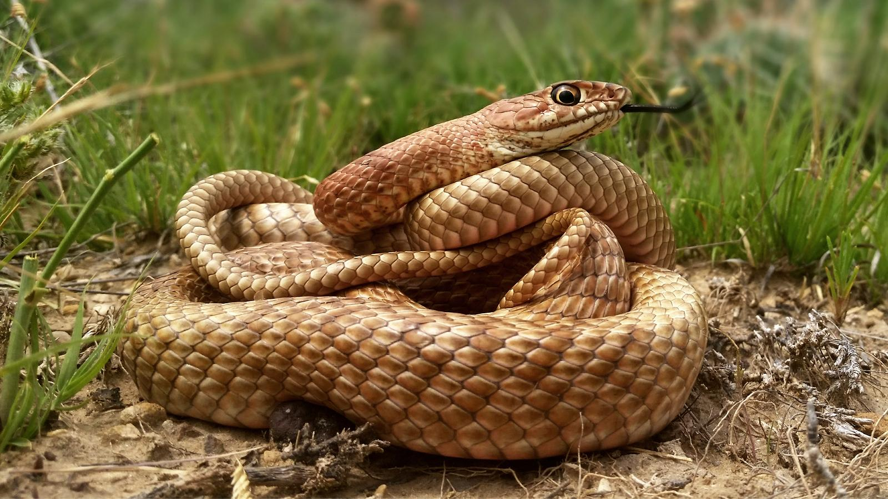
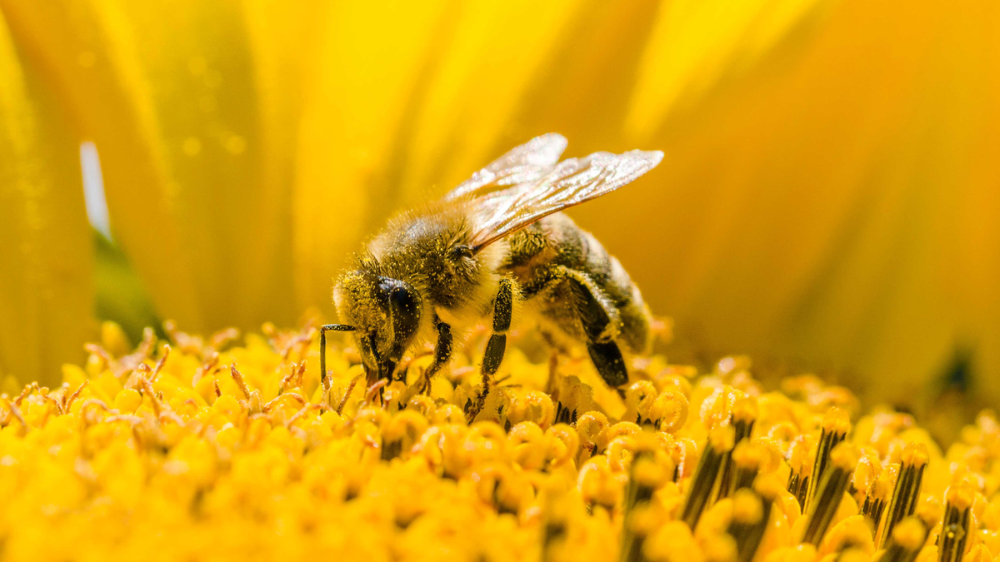

Turtles are reptiles of the order Testudines, also known as Chelonia. They are characterized by a bony or cartilaginous shell, developed from their ribs, that acts as a shield. Testudines include both extant (living) and extinct species. Among the turtles are included tortoises and terrapins. Proganochelys of the Late Triassic is the earliest known fossil with a complete shell.
Snakes are elongated, limbless, carnivorous reptiles of the suborder Serpentes /sɜːrˈpɛntiːz/.[2] Like all other squamates, snakes are ectothermic, amniote vertebrates covered in overlapping scales. Many species of snakes have skulls with several more joints than their lizard ancestors, enabling them to swallow prey much larger than their heads with their highly mobile jaws. To accommodate their narrow bodies, snakes' paired organs (such as kidneys) appear one in front of the other instead of side by side, and most have only one functional lung. Some species retain a pelvic girdle with a pair of vestigial claws on either side of the cloaca. Lizards have evolved elongate bodies without limbs or with greatly reduced limbs about twenty-five times independently via convergent evolution, leading to many lineages of legless lizards.[3] These resemble snakes, but several common groups of legless lizards have eyelids and external ears, which snakes lack, although this rule is not universal (see Amphisbaenia, Dibamidae, and Pygopodidae).
Bees are insects with wings closely related to wasps and ants, known for their role in pollination and, in the case of the best-known bee species, the western honey bee, for producing honey. Bees are a monophyletic lineage within the superfamily Apoidea. They are presently considered a clade, called Anthophila. There are over 16,000 known species of bees in seven recognized biological families.[1][2] Some species – including honey bees, bumblebees, and stingless bees – live socially in colonies while most species (>90%) – including mason bees, carpenter bees, leafcutter bees, and sweat bees – are solitary.
